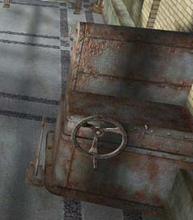

| 概要 | 地図 | |
| 淡いヒント集 | ヒント集 | 的確なヒント集 |
| 攻略最短ルート | Syberia 攻略へ |
| << 前の段階へ | 地域選択へ |
バラディレーン
駅
駅で再びあなたはオスカーと出会う。駅でやらなければならないことは、 ・切符と許可証を入手 ・許可証に公証人からの印鑑をもらう ・オスカーに許可証と切符を渡す ・貴重品室に4つの貴重品を置く ・機関車のゼンマイを巻く ということである。ここを突破すればバラディレーンでの冒険は終わりである。やり残したことがないかよく考えてみよう。
切符売り場
 ・車内でオスカーと出会った後、彼は切符売り場にいる。 ・切符と許可証をもらい、再び車内に戻った彼に会おう。
車内
 ・オスカーに許可証を渡す前に、許可証に印鑑を押さなければならない。 ・許可証を見ると、公証人の名前がある。公証人の家に何かあっただろうか? ・渡すのは、許可証、切符の順である。
公証人の家にある印を押すもの
 ・インクが入っていないので、インクを入れなければならない。どこに入れればよいだろうか。 ・どの書類に印鑑を押せばいいのだろうか。 ・赤いボタンを押せば、印鑑を押してくれる。
貴重品室
 ・貴重品とは、シリンダー2個、マンモスの人形、オスカーとアンナの人形である。 ・まだ見つけてないのならば、探さなくてはならない。 ・全てそろったら、オスカーに会いに行こう。
機関車のゼンマイを巻く装置
 ・操作できるのはハンドルとレバーである。 ・手順さえ間違えなければ、確実にゼンマイを巻くことはできる。 |
| << 前の段階へ | 地域選択へ |
| 概要 | 地図 | |
| 淡いヒント集 | ヒント集 | 的確なヒント集 |
| 攻略最短ルート | Syberia 攻略へ |
Syberia
| 目次へ戻る | ページの上部へ |